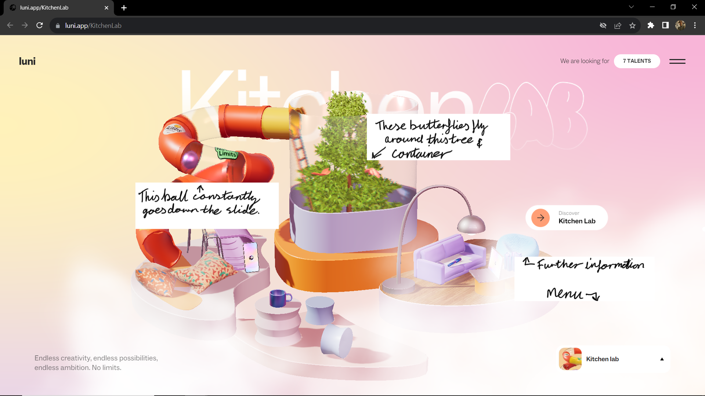
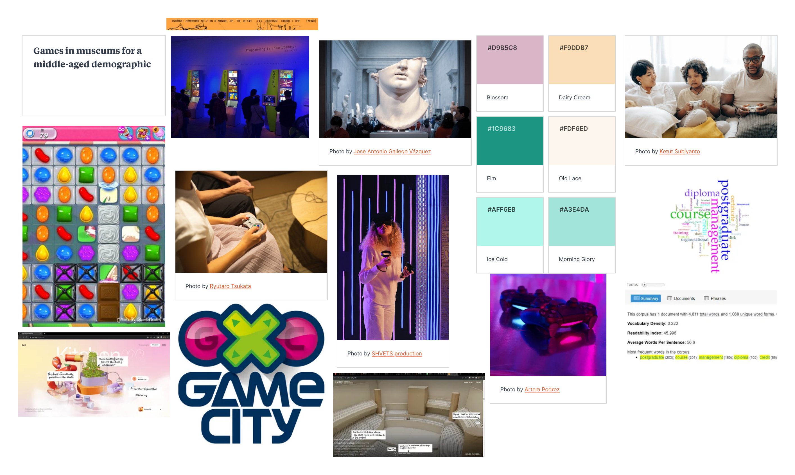

Independent Learning
Sculpting harmony is a website that uses video excellently with other multimedia elements to bring together a masterpiece of design.
- The website incorporates videos integrated into the site through the use of interviews and also scrollable content.
- The scrollable content works with the "run/play" button being the down scroll or down arrow, giving users more control of the pace and speed of a video.
- The interview takes place after the scroll content and is used to give the audience further information about the creation of the Disney concert hall, which is the purpose of the website.
- The interview allows the user to meet the creator of the hall and hear his thoughts and ideas. The video aids retention by being interesting and not too long as to not lose people with shorter attention spans.
- The video is also cut into sections to allow for the user to choose what part they are at with clear subheadings to allow for the best possible content.
- Finally, the video has inbuilt timed captions which follow along at the speed of the video but also states the name and relation to the project of the speaker.

The Luni website is a very aesthetically pleasing website that features animations to advertise different apps and websites to contribute to a health body and mind.
- The website uses animations to capture the user's attention to different parts of the screen and to keep them engaged for longer. Each area has a different palette and different animations, making each area unique.
- The website also uses transitions to seamlessly move from one page to another, giving the impression of having never left the homepage.
- Animations on the site includes (as shown in the screenshot on the right) a ball rolling down the slide and butterflies flying around a tree in a container.
- With the animations being in a separate areas from each other it doesn't overwhelm the user but is enough to keep their focus by having to look in separate places to fully enjoy the animation.
- At the two menus, subtle animations take place, letting the buttons move to reach the mouse/cursor.

Mood Board
Master Videos
Lab Task
High Quality
- The highest quality video runs smoothest even through my not fully perfect transitions.
- The video's colours seem more vibrant but that could also be bias by knowing that this is the highest quality video.
- The video is over 100 MB large which is a problem for people to access and load on slower connections.
Medium Quality
- The medium quality video is a bit less smooth in comparison to the high quality. Makes the transitions look worse.
- The colours are also less vibrant and slightly more muted in tone, but not enough to cause a problem.
- The file size is 38 MB. A much more acceptable size for a 54 second video.
Low Quality
- The video quality is slow and pixelated, looks significantly worse than the previous versions.
- The pixelated nature of the video draws more attention to the flawed transitions and the lack of cohesion within the piece.
- Yet the video does have the lowest file size of 3 MB which is ideal for those with limited connection and poor loading speed.